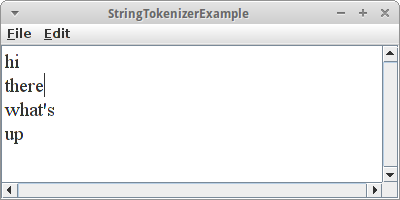
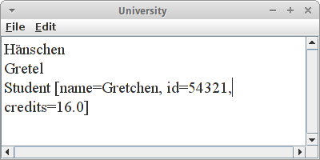

MindReader
Dieses Kapitel beschäftigen wir uns mit zwei Themen. Wir beginnen mit Buchstaben, Zeichen und Zeichenketten, auch Strings genannt. Wir werden also wieder Konsolenprogramme schreiben, aber dieses Mal geht es vor allem um Text und Textverarbeitung.
Außerdem werden wir aber unser Verständnis von Klassen vertiefen. Wir werden sehen wie Klassen aufgebaut sind, und wir werden unsere ersten eigenen Klassen schreiben.
.
char
Wir beginnen mit dem 'char' Datentyp, den wir ganz kurz im vorletzten Kapitel gesehen haben. Eine Variable c vom Datentyp char legt man wie folgt an:
char c = 'A';
In einer char Variablen kann immer nur ein Zeichen sein. Zeichen können Buchstaben, Ziffern und alle möglichen Sonderzeichen sein. Die Apostrophen (single quote) sind u.a. deswegen notwendig, damit man Ziffern von Zahlen unterscheiden kann:
int x = 5;
char d = '5';
Im ersten Beispiel handelt es sich um die Zahl 5, im zweiten um die Ziffer '5'. Man kann auch Sonderzeichen darstellen, z.B., '.', '$', aber auch unsichtbare Zeichen wie '\n' für eine neue Zeile.
.
Character
Die Character Klasse ist eine Hilfsklasse die man ab und zu gut gebrauchen kann. Z.B. hat sie eine Methode die feststellt ob ein Buchstabe ein Großbuchstabe ist:
char c = 'A';
if ( Character.isUpperCase( c ) ) {
println("Is upper case character.");
}
Zusätzlich gibt es noch die folgenden Methoden, die testen ob es sich bei dem Zeichen
- isDigit(c): um eine Ziffer,
- isLetter(c): um einen Buchstaben,
- isLetterOrDigit(c): um einen Buchstaben oder eine Ziffer,
- isWhitespace(c): um ein Leerzeichen, Tab ('\t') oder Neu Zeile ('\n'),
- isLowerCase(c): um einen Kleinbuchstaben
- isUpperCase(c): oder um einen Großbuchstaben
handelt.
Ansonsten wird die Character Klasse aber eher selten benötigt.
.
String
Viel, viel wichtiger hingegen ist die String Klasse. Strings bezeichnet man auch als Zeichenketten, also mehrere Zeichen. Fangen wir mit ein paar Beispielen an:
String s1 = "Hello";
String s2 = "world";
Hier deklarieren wir zwei Strings, s1 und s2, und initialisieren sie auf die Werte "Hello" und "world". Wichtig sind dabei die Anführungszeichen (double quotes) um Strings von chars zu unterscheiden. Denn ein char ist immer genau ein Zeichen, Strings hingegen können ein oder mehrere Zeichen enthalten, sie können sogar leer sein:
String s3 = "!";
String s4 = " ";
String s5 = "";
Hier enthält s3 ein Zeichen, das Ausrufezeichen. Auch s4 enthält ein Zeichen, das Leerzeichen. Und s5 enthält gar kein Zeichen, s5 ist aber trotzdem ein String.
Was Strings wirklich interessant macht ist, dass wir aus alten neue machen können indem wir sie aneinanderfügen
String s6 = s1 + s4 + s2 + s3;
und auch augeben können
println( s6 );
Und ähnlich wie wir Zahlen (int und double) von der Konsole einlesen können, können wir auch Strings von Konsole einlesen:
String name = readLine("Enter your name: ");
So wie die Character Klasse, hat auch die String Klasse zahlreiche Methoden:
- length(): gibt die Anzahl der Zeichen in einem String zurück
- charAt(int pos): gibt das Zeichen (char) an der Position pos zurück
- equals(String s2): stellt fest ob dieser String und der String s2 gleich sind
- substring(int p1): gibt den Teilstring ab der Position p1 bis zum Ende des Strings zurück
- substring(int p1, int p2): gibt den Teilstring von Position p1 bis zu Position p2 zurück, allerdings ohne das Zeichen an Position p2
- indexOf(char c): stellt fest ob das Zeichen c im String enthalten ist, falls ja gibt es die Position des Zeichens anderfalls -1 zurück
- indexOf(String s2): macht das Gleiche, sucht aber nach einem ganzen String
- compareTo(String s2): vergleicht zwei Strings alphabetisch, d.h. ein String der mit 'A' anfängt kommt vor einem String der mit 'B' anfängt
- toUpperCase(): gibt die Großbuchstabenversion eines Strings zurück, natürlich gibt es auch eine toLowerCase().
Wie wir gleich sehen werden, kann man damit einiges anstellen.
.
Übung: Die Zeichen eines Strings ausgeben
Als erstes Beispiel iterieren wir durch die Zeichen eines Strings und geben diese auf der Konsole aus:
String s1 = "Hello";
for ( int i=0; i<s1.length(); i++) {
char c = s1.charAt( i );
println( c );
}
.
Übung: Einen String umkehren
Man kann was wir gerade gelernt haben dazu verwenden einen String umzudrehen:
String s1 = "stressed";
String s2 = "";
for ( int i=0; i<s1.length(); i++) {
char c = s1.charAt( i );
s2 = c + s2;
}
println( s2 );
dann wird aus dem Wort "stressed" das Wort "desserts". Worte die gleich bleiben wenn man sie umkehrt, wie z.B. "racecar" oder "rentner", nennt man auch Palindrome.
.
Übung: Zwei Strings vergleichen
Als nächstes wollen wir feststellen, ob zwei Strings gleich sind. Bisher haben wir dafür "==" verwendet. Das funktioniert sehr gut für int, double und auch char, aber nicht für Strings, wie das folgende Beispiel zeigt:
String s1 = "Hello ";
String s2 = s1 + "world";
String s3 = "Hello world";
if (s2 == s3) {
println("Equal");
} else {
println("Not Equal");
}
Überraschenderweise wird hier "Not Equal" ausgegeben. Dies hat damit zu tun, dass wir die equals() Methode verwenden müssen wenn wir zwei Strings vergleichen wollen, also:
String s1 = "Hello ";
String s2 = s1 + "world";
String s3 = "Hello world";
if (s2.equals(s3)) {
println("Equal");
} else {
println("Not Equal");
}
Warum das so ist werden wir etwas später herausfinden.
.
Übung: Einen String auseinanderschneiden
Als letzte kleine Übung zu Strings wollen wir einen String auseinanderschneiden. Dazu verwenden wir die Methoden indexOf() und substring().
String s1 = "Hello world";
int posSpace = s1.indexOf(' ');
String s2 = s1.substring(0, posSpace);
String s3 = s1.substring(posSpace);
println(s2);
println(s3);
Wir finden die Position des Leerzeichens mit Hilfe der indexOf() Methode. Dann schneiden wir den vorderen Teil mit der substring() Methode ab. Wichtig sind hier zwei Dinge: das erste Zeichen ist an Position 0, d.h. wie üblich fangen wir bei 0 an zu zählen, und das Zeichen an der Position posSpace wird nicht mit abgeschnitten. Schließlich schneiden wir den Rest ab, also s3 ist alles ab Position posSpace.
.
StringTokenizer
Das Auseinanderschneiden von Strings ist etwas das wir so häufig tun werden, dass es dafür eine eigene Klasse gibt, den StringTokenizer.
String sentence = "hi there what's up?";
StringTokenizer st = new StringTokenizer( sentence, " .,?" );
while ( st.hasMoreTokens() ) {
println( st.nextToken() );
}
Zunächst initialisieren wir den StringTokenizer indem wir ihm sagen, was er auseinanderschneiden soll (sentence), und wie, also, welche Trennzeichen er verwenden soll (' ','.',',' und '?'). Der StringTokenizer zerlegt den String in Tokens, also eigentlich Wörter. Um an diese Wörter zu gelangen, fragen wir den StringTokenizer ob er Tokens hat, also wir rufen die Methode hasMoreTokens() auf. Falls ja, bitten wir den StringTokenizer mittels nextToken() uns doch das nächste Token zu geben. Und das machen wir solange, bis alle Tokens aufgebraucht sind.
.
Immutability
Etwas das manchmal zu Verwirrungen führt, ist die Immutability von Strings. Immutability heißt Unveränderlichkeit, also soviel wie ein String kann nicht verändert werden. Am besten wir sehen uns ein Beispiel an:
String s1 = "Hello";
s1.toUpperCase();
println( s1 );
Was wird auf der Konsole ausgegeben? Es wird "Hello" ausgegeben, und nicht wie man vielleicht hoffen würde "HELLO". Das hat damit zu tun, dass Strings unveränderlich sind.
Es gibt aber einen Trick, wie wir Strings trotzdem verändern können: wir weisen ihnen einfach einen neuen Wert zu:
String s1 = "Hello";
s1 = s1.toUpperCase();
println( s1 );
.
Klassen
Wir haben jetzt schon viel von Klassen gehört, und auch schon viele Klassen verwendet, z.B. die Karel Klassen, aber auch die Graphik Klassen wie GRect und GOval. Zuletzt haben wir die String Klasse und die StringTokenizer Klasse verwendet. Die Frage die sich stellt, können wir auch eigene Klassen machen?
Natürlich, und es ist gar nicht mal so schwer. Als erstes Beispiel betrachten wir mal einen Studenten aus der Sicht einer Hochschule. Welche Information müsste denn eine Hochschule über einen Studenten wissen? Wenn wir uns auf das Wesentliche beschränken, dann sind das Name, Matrikelnummer und Leistungspunkte (ECTS). Wir nehmen also diese Eigenschaften (Attribute) eines Studenten und fassen sie zusammen zu einer Klasse:
public class Student {
private String name;
private int id;
private double credits;
}
Im Prinzip ist also eine Klasse nichts anderes als ein Datencontainer. Jede Klasse sollte in ihrer eigenen Datei gespeichert werden, der Name der Datei muss genauso lauten wie der Name der Klasse.
SEP: Klassennamen sollten immer mit Großbuchstaben beginnen und der CamelCase Konvention folgen.
SEP: Information Hiding: Die Sichtbarkeit von Attributen sollte immer private sein.
.
Konstuktor
Allerdings sind Klassen 'intelligente' Datencontainer. Soll heißen, dass sie die Daten nicht nur enthalten und bündeln, sondern auch initialisieren, verwalten und ändern. Sie tun also auch etwas mit den Daten, und dafür haben Klassen Methoden. Die wichtigste Methode ist der Konstuktor, der initialisiert die Daten.
public Student(String n, int i, double c) {
name = n;
id = i;
credits = c;
}
Der Konstuktor hat immer den gleichen Namen wie die Klasse, manchmal kann es mehr als einen Konstuktor geben, sie unterscheiden sich dann durch ihre Parameter. Ein Konstuktor hat nie einen Rückgabewert, also ein return.
So, jetzt haben wir eine Klasse, was machen wir damit? Wir benutzen sie wie jede andere Klasse. Dazu schreiben wir ein ConsolenProgram in dem wir mal eine Instanz einer Student Klasse erzeugen:
public class University extends ConsoleProgram {
public void run() {
Student fritz = new Student("Fritz", 12345, 0.0);
}
}
Wir erzeugen also eine neue Instanz (new) der Klasse Student. Diese Instanz (auch Objekt genannt) soll fritz heißen. Um das Objekt zu erzeugen müssen wir den Konstruktor mit "new" aufrufen. Darin initialisieren wir die Instanzvariable name auf den Wert "Fritz", die Instanzvariable id auf den Wert 12345, und die Instanzvariable credits auf den Wert 0.0.
.
Methoden
Viel anfangen können wir mit dem fritz noch nicht, weil er nämlich nichts zu tun hat, also keine Methoden hat. Das können wir aber schnell ändern in dem wir "getter" Methoden hinzufügen:
public String getName() {
return name;
}
public int getId() {
return id;
}
public double getCredits() {
return credits;
}
Jetzt können wir auf die Daten der Klasse lesend zugreifen. Um die Daten der Klasse aber zu verändern brauchen wir noch "setter" Methoden.
public void setName(String n) {
name = n;
}
public void incrementCredits(double c) {
if (c >= 0) {
credits += c;
}
}
Nicht immer wollen wir dem Benutzer unserer Klasse erlauben Daten zu ändern. Z.B., kann ein Student zwar seinen Namen ändern, seine Matrikelnummer kann er aber nicht ändern. Deswegen gibt es keine setId() Methode. Auch soll ein Student nie negative Leistungspunkte erhalten können. Deswegen haben wir anstelle einer setCredits() Methode die incrementCredits(): diese stellt sicher, dass Leistungspunkte nur vermehrt werden können.
Abschließend, ist es noch üblich jeder Klasse eine toString() Methode zu geben:
public String toString() {
return "Student [name=" + name + ", id=" + id
+ ", credits=" + credits + "]";
}
Die Aufgabe der toString() Methode ist es Informationen über das Objekt, also in der Regel die Werte der Attribute, auszugeben.
.
Übung: Hansel und Gretel
Die Klasse Student ist jetzt einsatzbereit und als Beispiel schauen wir uns mal die beiden Studenten Hansel und Gretel an der Brüder Grimm Berufsakademie an:
public class University extends ConsoleProgram {
public void run() {
Student hansel = new Student("Hänschen", 12345, 0.0);
println(hansel.getName());
Student gretel = new Student("Gretel", 54321, 11.0);
println(gretel.getName());
gretel.setName("Gretchen");
gretel.incrementCredits(5);
println(gretel.toString());
}
}
.
Wrapper
Es ist nicht selten, dass man einen String in eine Zahl umwandeln muss. Dafür gibt es die Wrapper Klassen Integer und Double. Wenn man z.B. aus dem String "42" die Zahl 42 machen möchte, dann verwendet man die parseInt() Methode der Integer Klasse:
String fourtyTwo = "42";
int x = Integer.parseInt(fourtyTwo);
Umgekehrt um aus einer Zahl einen String zu erzeugen kann man auch wieder die Integer Klasse verwenden,
int x = 42;
String fourtyTwo = Integer.toString(x);
oder man behilft sich mit einem kleinen Trick:
String fourtyTwo = "" + x;
Es gibt für jeden primitiven Datentyp, also z.B. int, double, boolean und char, eine Wrapper Klasse. Es gibt sogar eine Wrapper Klasse für void, allerdings ist das wahrscheinlich die nutzloseste Klasse der Welt.
.
Review
In diesem Kapitel haben wir uns hauptsächlich mit Strings und mit Klassen beschäftigt. Wir haben das erste Mal eine eigene Klasse geschrieben. Dabei haben wir gesehen, dass Klassen immer wie folgt aufgebaut sind:
public class Name {
// variables
// methods
}
d.h. eine Klasse hat Variablen und Methoden. Manchmal nennen wir die Variablen auch Instanzvariablen, Eigenschaften einer Klasse oder auch Attribute einer Klasse. Bei den Methoden haben wir gesehen, dass diese immer etwas tun, und dass es eine spezielle Methode gibt, den Konstruktor.
Ausserdem haben wir die folgenden Themen behandelt:
- Character
- String
- StringTokenizer
- Wrappers
Das wichtigste in diesem Kapitel waren aber die Klassen.
.
Projekte
Die Projekte in diesem Kapitel beschäftigen sich hauptsächlich mit Strings und dem Schreiben von einfachen Klassen.
.
Student
In dem Beispiel zu Student stellt sich die Frage warum die Instanzvariablen private waren? Betrachten wir das Problem einmal von der anderen Seite. Nehmen wir an Instanzvariablen wären public: könnte man dann verhindern, dass ein Student negative credits bekommt, oder dass seine id geändert werden kann?
.
ASCII
Um Zeichen (chars) zu speichern verwendet der Computer Zahlen. Deswegen kann man chars addieren, subtrahieren und man kann sie sogar in Bedingungen und Schleifen verwenden. Z.B. um festzustellen ob ein char ein Großbuchstabe ist kann man folgende Bedingung verwenden:
if ( c >= 'A' && c <= 'Z' ) { ... }
Oder um aus einem Großbuchstabem einen Kleinbuchstaben zu machen, hilft folgender Trick:
char gross = 'D';
char klein = gross - 'A' + 'a';
Man kann auch aus chars ints machen und umgekehrt via Cast bzw. Typumwandlung
char c = 'A';
int ascii = (int) c;
char d = (char) ascii;
Mit diesem Wissen wollen wir die folgenden Methoden schreiben:
- isUpperCase(char c)
- toUpperCase(char c)
- printASCIITable()
Bei letzterer genügt es die ASCII Zeichen zwischen 32 und 128 auszugeben, da die ersten 31 ASCII Zeichen teilweise nicht druckbar sind.
.
PasswordCreator
Mit unserem Wissen über Strings können wir jetzt einen Passwort Generator schreiben. Ein gutes Passwort soll mindestens 8 Zeichen lang sein, und mindestens je einen Kleinbuchstaben, einen Großbuchstaben, eine Ziffer und ein Symbol enthalten. Man könnte also vier Strings definieren die die möglichen Zeichen enthalten, und dann mit dem RandomGenerator daraus z.B. je zwei zufällig auswählen und zu einem Passwort zusammensetzen:
String small = "abcdefghijklmnopqrstuvwxyz";
password += small.charAt(rgen.nextInt(small.length()));
.
RandomText
Für Testzweck ist es manchmal hilfreich Zufallstext erzeugen zu können. Das ist gar nicht so schwer. Wir beginnen wieder mit dem Top-Down Ansatz. Nehmen wir an wir hätten eine Methode createRandomSentence() die einen Zufallssatz generiert. Dann könnten wir einen Zufallstext erzeugen, indem wir einfach mehrere Zufallssätze erzeugen. Die Methode createRandomSentence() wiederum ist einfach wenn wir annehmen es gäbe eine Methode namens createRandomWord(), denn dann würden wir einfach irgendwo zwischen drei und 5 Wörter nehmen, Lehrzeichen dazwischen setzen und einen Punkt am Ende hinzufügen. Und auch die createRandomWord() Methode ist nicht so schwer, denn Wörter bestehen aus Kleinbuchstaben, und haben in etwa 3 bis 8 Buchstaben, also
private String createRandomWord() {
String word = "";
int nrOfCharsInWord = rgen.nextInt(3, 8);
for (int i = 0; i < nrOfCharsInWord; i++) {
word += (char)('a' + rgen.nextInt(26));
}
return word;
}
.
Palindrome
Worte die gleich bleiben wenn man sie umkehrt, wie z.B. "racecar" oder "rentner", nennt man auch Palindrome. Wir wollen eine Methode namens isPalindrome(String s) schreiben, die feststellt ob ein String ein Palindrom ist. Dazu schreiben wir eine Methode reverse() die einen gegebenen String umdreht, und dann vergleichen wir mittels equals() den Orignal mit dem umgekehrten String. Sind beide gleich, handelt es sich um ein Palindrom.
.
CountUpperCase
Hier sollen wir eine Methode schreiben, die die Großbuchstaben in einem String zählt. Das kann z.B. ganz nützlich sein wenn man bestimmen will ob ein bestimmter Text deutsch oder englisch ist: englischer Text hat im Durchschnitt weniger Großbuchstaben. Dazu können wir entweder die Character Klasse verwenden oder die Methode die wir oben selbst geschrieben haben.
.
ReadOneChar
Wir möchten, dass der Nutzer nur einen Buchstaben eingeben kann. Er soll also nicht 0 oder mehrere, sondern genau einen Buchstaben eingeben. Dazu wollen wir eine Methode readOneChar() schreiben, die einen char als Rückgabewert liefert.
Es gibt die readString() Methode zum Einlesen von Strings. Wir benutzen also den Loop-and-a-Half, und benutzen als Abbruchkriterium, dass der eingelesene String die Länge eins haben soll.
while (true) {
s = readLine();
if (s.length() == 1)
break;
println("Please, enter only one character:");
}
.
Encrypt
Eine andere interessante Anwendung, die wir jetzt ganz einfach realisieren können, ist ein kleines Verschlüsselungsprogramm. Wir verwenden dafür die sogenannte Caesar Cipher, die bereits Julius Caesar verwendet haben soll. Bei der Caesar Cipher [2] werden die Buchstaben in einem gegeben Text einfach um eine feste Anzahl, den Schlüssel, verschoben. Beträgt der Schlüssel z.B. vier, dann wird aus einem 'a' ein 'e', aus einem 'b' ein 'f', usw. Zum Entschlüsseln macht man den Vorgang einfach rückgängig.
Um das umzusetzen, schreiben wir zwei Methoden, encrypt() und decrypt(), die eine verschlüsselt, die andere entschlüsselt. Beide nehmen einen String text und einen int key als Parameter. Die eine gibt den verschlüsselten Text als String zurück, die andere den entschlüsselten.
.
Hinweise: damit das Ganze nicht zu kompliziert wird, macht es Sinn den Text erst einmal in Kleinbuchstaben umzuwandeln bevor man mit der Verschlüsselung anfängt. Und der Restwert Operator '%' ist hier sehr praktisch:
char c = 'a';
int d = c - 'a';
int e = d + key;
int f = e % 26;
char g = (char) ( f + 'a');
.
Abjad
Um etwa 1500 v. Chr. entwickelten die Phönizier die erste Alphabetschrift, eine linksläufige Konsonantenschrift. Unter Konsonantenschriften versteht man Schriftsysteme, in denen nur Zeichen für Konsonanten verwendet werden [2].
Um zu zeigen, dass eine solche Schrift durchaus lesbar sein kann, haben Archäologen uns beauftragt ein ConsoleProgramm zu schreiben, das aus einem gegebenen Text alle Vokale entfernt. Wir können wie folgt vorgehen:
- mittels readLine() bitten wir den Benutzer einen normalen Text einzugeben,
- diesen durchsuchen wir dann nach Vokalen und entfernen diese,
- das Resultat geben wir dann mittels println() aus.
Idealerweise erinnern wir uns an den Top-Down Ansatz, d.h. wir sollten vielleicht davon ausgehen, dass es die Methoden removeVowels() und isVowel() gibt, und diese dann später implementieren. Man könnte auch die replace() Methode der String Klasse verwenden, aber dazu mehr im nächsten Projekt.
.
 Franconian
Franconian
Die Sprache der Franken, auch 'lingua franca' genannt, ist zu unrecht in Vergessenheit geraten. Die 'lingua franca' (italienisch für: „fränkische Sprache“) ist eine romanisch basierte Pidgin-Sprache. Pidgin-Sprache oder Pidgin bezeichnet eine reduzierte Sprachform, die verschiedensprachigen Personen zur Verständigung dient [3].
Um also zur Verständigung der Völker beizutragen, sollen wir ein Deutsch-Fränkisches Übersetzungsprogramm schreiben. Im Fränkischen finden u.a. folgende lautlichen Vereinfachungen statt (auch als „binnendeutsche Konsonantenschwächung“ bekannt):
- t -> d
- p -> b
- k -> g
So wird beispielsweise aus dem 'Politiker' der 'Bolidiger'.
Wir schreiben also eine Methode translateGermanToFranconian(), die einen String als Parameter hat mit dem deutschen Text, und einen String als Rückgabewert hat, welcher die übersetzte fränkische Version liefert. Dazu könnte man die replace() Methode der String Klasse verwenden:
String german = "politiker";
String franconian = old.replace('t','d');
...
Anmerkung: In der String Klasse [4] gibt es auch die Methoden replaceAll(), replaceFirst() und split(). Diese sollten wir allerdings erst verwenden wenn wir wissen was "Reguläre Ausdrücke" sind (regular expressions).
.
PigLatin
Pig Latin [5] ist eine Geheimsprache für Kinder die ganz einfache Regeln hat:
- beginnt ein Wort mit einem Konsonanten, dann wird der Konsonant ans Ende des Wortes verschoben und die Silbe "ay" angehängt. Also aus "loser" wird "oserlay" oder aus "button" wird "uttonbay",
- beginnt ein Wort mit einem Vokal, dann wird nur die Silbe "ay" angehängt. Also aus "eagle" wird "eagleay" und aus "america" wird "amercaay".
Wir sollen also auch hier wieder ein Konsolenprogramm schreiben, dass den Benutzer nach einem englischen Satz fragt und diesen dann ins Pig Latin übersetzt. Auch hier sollten wir wieder an den Top-Down Ansatz denken.
.
YodaTalk
In der Typologie von Sprachen [6], kommt die Satzstruktur Subjekt-Verb-Objekt (SVO), also das Subjekt an erster Stelle, das Verb an zweiter und das Objekt an dritter steht, sehr häufig vor. Circa 75% aller Sprachen der Welt folgen diesem oder einem sehr ähnlichen Muster. Wir wissen ja, dass Yoda vom Sumpfplaneten Dagobah kommt und dort ist der bevorzugte Satzbau Objekt-Subjekt-Verb (O,SV). Also, zum Beispiel, aus dem englischen Satz:
You are lucky.
wird auf “Yodish”:
Lucky, you are.
Um die interplanetaren Kommunikation zu vereinfachen, ist es nun unsere Aufgabe, ein ConsoleProgramm zu schreiben, das einen gegebenen Text aus dem Englischen ins Yodische übersetzt. Wir können davon ausgehen, dass jeder eingegebene Satz immer aus drei Worten besteht, immer in der Reihenfolge SVO.
Wir könnten folgendermaßen vorgehen:
- wir bitten den Benutzer einen englischen Text einzugeben
- dann identifizieren wir die drei Elemente Subjekt, Verb und Objekt mit Hilfe eines StringTokenizer
- mit Hilfe von println(), geben wir dann das übersetzte Yodish in der Form Objekt, Subjekt Verb aus.
Natürlich verwenden wir wieder den Top-Down Ansatz und implementieren eine Methode namens translateFromEnglishToYodish().
.
ELIZA
Um zu sehen was man mit Strings alles machen kann, schauen wir uns mal die Java Version des Programms ELIZA an. ELIZA simuliert einen Psychotherapeuten der uns Fragen stellt und mit dem wir dann eine kleine Konversation führen können. Man muss bedenken, dass ELIZA bereits 1966 von Joseph Weizenbaum programmiert wurde [7]. Es war das erste Programm das zeigte, dass man mit Computern auch mit normaler Sprache kommnuizieren kann. Moderne Version von ELIZA sind Siri und die Telemarketing-Software Samantha, die kategorisch abstreitet, eine Maschine zu sein [8].
.
RandomGenerator
Wir wollen unsere eigene RandomGenerator Klasse schreiben. Dass ist gar nicht so schwer, wenn wir wissen, dass es im Standard Java eine Methode namens Math.random() gibt. Diese Methode gibt eine Gleitkommazahl zwischen 0 und 1, einschließlich der 0, aber ausschließlich der 1. Wenn wir damit eine Zahl zwischen 1 und 6 erzeugen wollen, dann geht das so:
int diceRoll = 1 + (int)(Math.random() * 6);
Mit diesem Wissen wollen wir die Klasse RandomGenerator schreiben mit den Methoden nextInt(int a, int b), nextInt(int b), nextBoolean() und nextColor(). In Zukunft können wir jetzt immer unsere eigene Klasse anstelle der ACM Klasse verwenden.
.
Counter
Wir wollen eine Klasse Counter schreben, die als Zähler fungierten kann. Die Klasse soll eine private Instanzvariable namens count haben. Im Konstruktor soll diese Variable auf den Wert 0 gesetzt werden. Dann soll es eine Methode namens getValue() geben, die einfach den momentanen Wert der Variable count zurückgibt. Und es soll eine Methode namens incrementCounter() geben, die den Wert der Variable count um eins erhöht.
.
Point
Als nächstes wollen wir eine Klasse Point schreiben. Diese soll einem Punkt in zwei dimensionalen Raum entsprechen, also eine x und eine y Koordinate haben. Die Klasse soll einen Konstuktor Point(int x, int y), sowie die Methoden getX(), getY(), move(int dx, int dy), equals(Point p), add(Point p) und toString() haben.
.
ConnectTwoMovingPoints
Unsere Klasse Point scheint so für sich alleine relative langweilig. Wenn sich aber zwei Punkte bewegen, und man diese mit einer farbigen Linie verbindet, dann sieht das schon sehr hübsch aus.
Wir beginnen mit der Klasse Point, die allerdings etwas andere Anforderungen hat, als die vom letzten Projekt. Sie soll möglichst einfach sein. Sie soll vier Instanzvariablen haben, nämlich x, y, vx und vy. Alle vier sollen public sein. Der Konstruktor soll keine Parameter haben, und er soll die Instanzvariablen mit zufälligen Werten initialisieren. Die Klasse soll nur eine Methode haben:
public void move() {
x += vx;
y += vy;
}
Diese Klasse wollen wir in unserem GraphicsProgram ConnectTwoMovingPoints verwenden:
public void run() {
Point p1 = new Point();
Point p2 = new Point();
while (true) {
p1.move();
p2.move();
checkForCollisionWithWall(p1);
checkForCollisionWithWall(p2);
drawConnection(p1, p2);
pause(DELAY);
}
}
Wir erzeugen also zwei Punkte, p1 und p2. In unserem GameLoop, bewegen wir die beiden Punkte, schauen nach ob die Punkte noch im Spielfeld sind, und dann verbinden wir die beiden Punkte mit einer Linie. Das ist eigentlich ganz einfach. Allerdings wenn man immer nur zehn Linien anzeigen möchte, und die älteren wieder löschen möchte, benötigt man Arrays (nächstes Kapitel).
Noch eine kleine Feinheit in dem Program: wenn wir uns die Definition der Klasse Point ansehen,
public class ConnectTwoMovingPoints extends GraphicsProgram {
...
class Point {
...
}
}
dann stellen wir fest, dass dies innerhalb der Klasse ConnectTwoMovingPoints geschieht. Man nennt die Klasse Point daher auch eine lokale Klasse, weil sie nur lokal innerhalb der Klasse ConnectTwoMovingPoints existiert. Es gibt ein paar wenige Fälle wie hier, wo so etwas Sinn macht. ansonsten macht man so etwas aber eher selten.
.
Blackjack
Laut Wikipedia ist "Black Jack das meistgespielte Karten-Glücksspiel, das in Spielbanken angeboten wird" [9]. Wir wollen eine etwas einfachere Version dieses Spiels implementieren.
Anstelle von Karten verwenden wir einfach Zahlen, und zwar Zahlen zwischen 1 und 11. Der Computer spielt den Croupier und beginnt indem er eine Zufallszahl zwischen 17 und 25 erzeugt. Dann ist der Spieler an der Reihe. Dieser fängt mit einer Karte an, also eine Zufallszahl zwischen 1 und 11. Er kann dann entscheiden ob er noch eine Karte möchte. Falls ja, wird wieder eine Zufallszahl zwischen 1 und 11 erzeugt und zur momentanen "Hand" hinzuaddiert. Wenn der Spieler keine neue Karte mehr haben möchte, wird die "Hand" des Spielers mit der des Computers verglichen.
Gewonnen hat derjenige der 21 Punkte oder weniger hat und mehr als der andere. Ansonsten ist es ein Unentschieden.
.
SimpleCraps
"Craps bzw. Craps shooting oder Seven Eleven ist ein Würfelspiel, das sich vor allem in den USA großer Beliebtheit erfreut." [10]
Wir werden eine einfachere Version von Craps implementieren: Bei uns gibt es nur einen ganz normalen Würfel. Der Spieler beginnt mit einem Guthaben von 100 Euro. In jeder Runde werden 10 Euro gesetzt und der Spieler auf eines der folgenden Resultate setzen:
- odd
- even
- high (4,5,6)
- low (1,2,3)
Das Spiel ist beendet, wenn kein Guthaben mehr vorhanden ist.
.
Factorial
Nicht alle Berechnungen die ein Computer macht sind richtig. Am besten wir sehen uns mal ein Beispiel an.
Die Fakultät einer Zahl ist das Produkt aller natürlichen Zahlen kleiner und gleich dieser Zahl. Z.B. ist die Fakultät von 3:
3! = 1 * 2 * 3 = 6
Wir wollen also eine Methode namens calculateFactorial(int n) schreiben, die die Fakultät der Zahl n berechnet. Und damit wollen wir dann die Fakultäten der Zahlen von 1 bis 20 ausgeben. Fakultäten berechnet man am besten mit einer for Schleife.
Die Fakultäten haben die Eigenschaft, dass sie sehr schnell sehr groß werden. Und das führt zu einem Problem, denn Computer können nicht so gut mit großen Zahlen rechnen!
.
 Rabbits
Rabbits
Jeder der schon mal Kaninchen hatte weiß, dass diese eine interessante Eigenschaft haben: sie vermehren sich und zwar rasant. Wir wollen also ein Programm schreiben dass berechnet wie sich unsere Kaninchen-Population über die Monate entwickelt. Wir folgen dazu dem Modell von Fibonacci [12]:
- "Jedes Paar Kaninchen wirft pro Monat ein weiteres Paar Kaninchen.
- Ein neugeborenes Paar bekommt erst im zweiten Lebensmonat Nachwuchs (die Austragungszeit reicht von einem Monat in den nächsten).
- Die Tiere befinden sich in einem abgeschlossenen Raum, sodass kein Tier die Population verlassen und keines von außen hinzukommen kann."
Wenn wir die Simulation richtig schreiben, dann müsste dabei die Fibonacci-Folge, also 1, 1, 2, 3, 5, 8, 13, 21, 34, 55, 89, 144, ... herauskommen.
.
WordTwist
In dem Spiel WordTwist geht es darum ein Wort in dem einige Buchstaben vertauscht wurden, wiederzuerkennen. Also z.B. sollen wir erkennen, dass das Wort "nhickce" eigentlich aus dem Wort "chicken" entstanden ist.
Wir beginnen mit dem Ausgangswort, also z.B. "chicken", und vertauschen einige Buchstaben. Das zeigen wir dann dem Nutzer, und er soll dann raten welches das Ausgangswort war. Wenn wir wieder den Top-Down Ansatz verwenden, dann macht es Sinn zunächst eine Methode scrambleWord(String word) zu schreiben, die das Ausgangswort als Parameter nimmt, und das durchmischte Wort als Rückgabewert liefert. Wenn wir den Top-Down Ansatz weiterverfolgen, macht es auch Sinn eine Methode namens randomSwap(String word) zu schreiben, die einfach zwei zufällig gewählte Buchstaben in dem Wort vertauscht. Wenn wir diese Methode mehrmals aufrufen, dann kommt dabei ein gut durchmischtes Wort heraus.
Die Methode pickGuessWord() existiert bereits und liefert uns ein zufälliges Wort.
.
Challenges
.
 Hangman
Hangman
Galgenmännchen ist ein einfaches Buchstabenspiel [12]. Eigentlich ein grafisches Spiel, wollen wir hier eine Variante programmieren die textbasiert ist. Es beginnt damit, dass sich der Computer ein zufälliges Wort überlegt. Der Spieler darf dann einen Buchstaben raten. Das Programm zeigt dann an ob und an welcher Stelle im Wort dieser Buchstabe vorkommt. Das wird dann solange wiederholt, bis das Wort erraten wurde. Am Ende soll dann ausgegeben werden, wieviele Versuche notwendig waren um das Wort zu erraten. Dabei werden aber nur Fehlversuche gezählt.
Wir benötigen zwei Instanzvariablen,
private String guessWord;
private String hintWord;
wobei guessWord das Wort enthält das geraten werden soll (z.B. "mother") und hintWord enthält die Buchstaben die bisher korrekt geraten wurden, also am anfang nur Striche (z.B. "------"). Wir müssen sowohl guessWord als auch hintWord initialisieren:
guessWord = pickGuessWord();
createHintWord();
wobei die Methode pickGuessWord() bereits existiert und wir die Methode createHintWord() aber noch schreiben müssen.
Danach beginnt der GameLoop: Im ersten Schritt zeigen wir dem Spieler das hintWord damit er eine Idee hat wieviel Buchstaben das Wort enthält. Dann bitten wir den Spieler einen Buchstaben einzugeben. Hier können wir die Methode readOneChar() aus dem Projekt ReadOneChar verwenden. Mittels contains():
char c = readChar();
if (guessWord.contains("" + c)) {
buildNewHintWord(c);
}
können wir feststellen, ob der neue Buchstabe in dem guessWord überhaupt vorkommt. Falls ja, müssen wir ein neues hintWord mittels der Methode buildNewHintWord(c) konstruieren. Diese Methode sollte den richtig geratenen Buchstaben an der korrekten Stelle im hintWord einfügen, und das neue hintWord sollte dann dem Spieler angezeigt werden.
Das Abbruchkriterium ist relativ einfach, wenn es keine Striche "-" mehr im hintWord gibt, dann hat der Spieler das Wort erraten. Alternativ könnte man natürlich auch guessWord und hintWord vergleichen.
.
MindReader
In diesem Spiel geht es um das Gedankenlesen. Es ist inspiriert vom Münzwurf, d.h. es gibt Kopf (heads) und Zahl (tails). Aber anstelle eine Münze zu werfen, wählt der Spieler einfach Kopf oder Zahl. Der Computer versucht nun vorherzusagen was der Spieler raten wird. War die Vorhersage des Computers richtig, erhält der Computer einen Punkt, ansonsten der Spieler. Wer als erstes 25 Punkte hat, hat gewonnen. Die Idee des Spiels basiert auf einem Handout von Professor Raja Sooriamurthi, der wiederum von Professor Gregory Rawlins inspiriert wurde [13].
Wenn wir den Top-Down Ansatz verwenden, dann ergibt sich folgende Grobstruktur:
- der Computer macht eine Vorhersage, entweder Kopf oder Zahl (computerMakePrediction())
- der Spieler trfft seine Auswahl, entweder Kopf oder Zahl (humanMakePick())
- die Vorhersage des Computers wird angezeigt (revealPrediction())
- die Computer-Vorhersage wird mit der Auswahl des Spielers verglichen und je nachdem ob der Computer richtig geraten hat oder nicht, erhält entweder der Computer einen Punkt oder der Spieler.
Das Ganze wird dann so lange wiederholt bis einer 25 Punkte erreicht hat.
Für das Spiel benötigen wir vier Instanzvariablen:
private char computerGuess;
private char humanGuess;
private int computerScore = 0;
private int humanScore = 0;
und zwar jeweils den Buchstaben den der Spieler eingegeben hat und den den der Computer vorhergesagt hat, sowie den Spielstand, also die Punkte des Spielers und die des Computers.
Die Vorhersage des Computers könnte man einfach zufällig machen, aber dann ist das Spiel eher langweilig. Viel interessanter wird es mit der bereits existierenden Klasse MindReaderPredictor:
predictor = new MindReaderPredictor();
Diese Klasse hat zwei Methoden, makePrediction() und addNewGuess(char c). Die erste Methode versucht eine Vorhersage zu machen, gibt also 'h' oder 't' als Rückgabewert. Die zweite fügt eine neue Spielerauswahl zur Datenbank des Predictors hinzu, und erlaubt es dem Predictor bessere Vorhersagen zu machen. Der Predictor versucht also vom Spieler zu lernen. Der predictor sollte natürlich auch eine Instanzvariable sein.
Erweiterungen:
Man kann sich für das Spiel ganz viele Erweiterungen einfallen lassen. z.B.:
- könnte man mehrere Spiele gleich hintereinander spielen, dabei sollte aber der MindReaderPredictor nicht jedes mal neu initialisiert werden
- man könnte eine eigene MindReaderPredictor Klasse schreiben, eine ganz einfache Version würde einfach nur zufällig zwischen 'h' und 't' wählen
.
Fragen
-
Geben Sie ein Beispiel für eine Klasse und ein Beispiel für ein Objekt.
-
"arnold" ist eine "Schauspieler". Ist "arnold" ein Objekt oder eine Klasse?
-
Was ist normalerweise die Aufgabe eines Konstruktors?
-
Betrachten Sie die folgenden Klassen: SteepleChaserKarel, GRect, Karel, GOval, GObject. Welche ist die Superklasse von welcher?
-
Es ist guter Stil jeder Klasse eine toString() Methode zu geben. Was sollte die toString() Methode machen?
-
Wie konvertieren Sie einen String der eine Zahl enthält, z.B. "42", in einen int?
-
Strings sind IMMUTABLE, also unveränderlich, was bedeutet das?
-
Wenn man zwei Strings vergleichen möchte muss man etwas vorsichtig sein. Welcher Fehler tritt sehr häufig beim Vergleichen von Strings auf?
-
Die Klasse String hat viele Methoden. Die folgenden haben wir benutzt. Beschreiben Sie kurz, was jede dieser Methoden macht.
substring()
length()
charAt()
toLowerCase()
indexOf()
-
Schreiben Sie Beispielcode der einen String umkehrt, also z.B. das Wort ”STRESSED” in das Wort “DESSERT” verwandelt. (Der reine Java Code genügt, eine Klassen oder Methoden Deklaration ist nicht notwendig)
-
Wofür verwendet man die StringTokenizer Klasse?
-
Die Klasse StringTokenizer nimmt einen String als Parameter und hat zwei Methoden namens hasMoreTokens() und nextToken(). Schreiben Sie Code der den Nutzer nach einem Satz fragt, und dann die einzelnen Worte des Satzes ausgibt, Zeile für Zeile.
-
Der nachfolgende Code hat Probleme. Mindestens fünf Code Konventionen wurden dabei
verletzt. Listen Sie diese bitte auf. (1 Punkt)
public class factorialExample extends ConsoleProgram {
int j = 3;
private static final int maxnum = 10;
public void run() {
for (int i = 0; i < maxnum; i++) {
println(i + "! = " + factorial(i));
}
}
private int Factorial(int n) {
int RESULT = 1;
for (int i = 1; i <= n; i++)
result *= i;
return result;
}
}
.
Referenzen
Die Referenzen aus Kapitel 2 sind auch hier weiter wichtig. Außerdem enthält die Wikipedia zahlreiche Informationen.
[1] Caesar cipher, https://en.wikipedia.org/w/index.php?title=Caesar_cipher&oldid=702242426 (last visited Feb. 17, 2016).
[2] Abjad, https://en.wikipedia.org/w/index.php?title=Abjad&oldid=704692935 (last visited Feb. 17, 2016).
[3] Pidgin-Sprachen, https://de.wikipedia.org/w/index.php?title=Pidgin-Sprachen&oldid=147087583 (last visited Feb. 17, 2016).
[4] String (Java Platform SE 7 ) - Oracle Documentation, https://docs.oracle.com/javase/7/docs/api/java/lang/String.html
[5] Pig Latin, https://de.wikipedia.org/w/index.php?title=Pig_Latin&oldid=149209295 (Abgerufen: 17. Februar 2016, 20:54 UTC).
[6] Sprachtypologie, https://de.wikipedia.org/w/index.php?title=Sprachtypologie&oldid=149705787 (Abgerufen: 17. Februar 2016, 21:10 UTC).
[7] ELIZA, https://en.wikipedia.org/w/index.php?title=ELIZA&oldid=704986757 (last visited Feb. 17, 2016).
[8] Telemarketing-Software Samantha, http://de.engadget.com/2013/12/11/audio-telemarketing-software-samatha-streitet-kategorisch-ab-e/
[9] Blackjack, https://en.wikipedia.org/wiki/Blackjack
[10] Craps, https://de.wikipedia.org/wiki/Craps
[11] Fibonacci-Folge, https://de.wikipedia.org/wiki/Fibonacci-Folge
[12] Galgenmännchen, https://de.wikipedia.org/wiki/Galgenmännchen
[13] Mind Reader: a program that predicts choices, http://nifty.stanford.edu/2007/raja-mindreader/
.